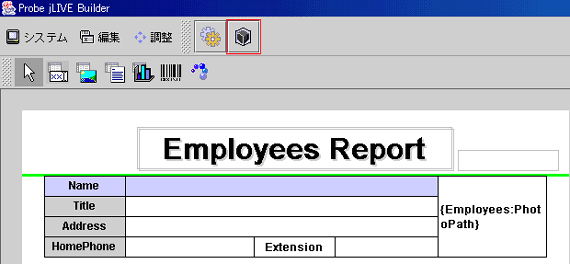
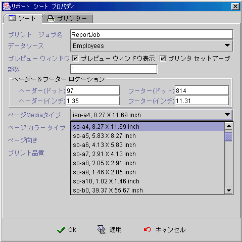
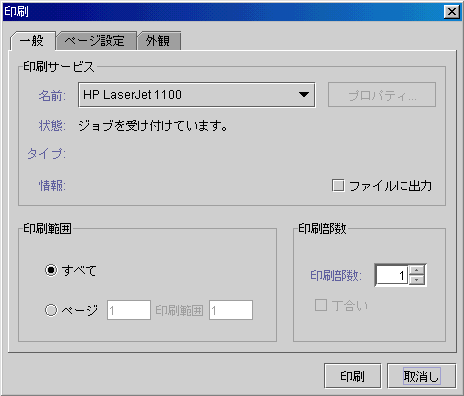
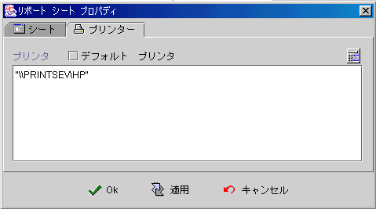

|

7.3
レポートプロパティ (report properties)
Java™
印刷セキュリティ体制(Java™ print security policy)
jLIVE
Builder™
レポートシステムはレポートプロパティによって設定します
(report properties)，デザイナーはニーズによって印刷作業の設定を行えます。例えば：
-
ユーザにプレビューが必要かどうか(preview)。
-
ユーザにプリンター設定が必要かどうか(printer setup)。
-
ユーザにデフォルト印刷部数設定が必要かどうか(copies)。
-
レポート種別によってプリンター指定するかどうか(printer)。
レポートプロパティは編集
(
レポートプロパティ編集 )
をクリックし、次のフォームが表示されます。


-
ページカラー (page color type)：カラー印刷かモノクロー印刷の設定。
-
カラー (color)
-
モノクロー (monochrome)
-
印刷向き (page orientation requested type)：垂直か横に印刷。
-
ページ印刷品質(page print quality type)：品質プション。
-
プリンター (printer)：プリンター指定。


Copyright © 2001~
2004 Probe Technology . All Rights Reserved.
Questions, comments,
and suggestions to Service@probe.com.tw
|